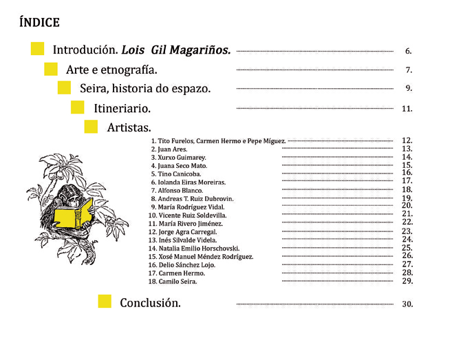
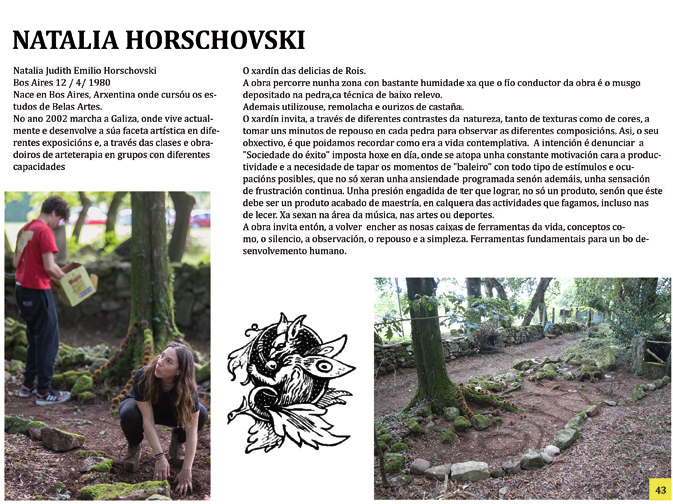
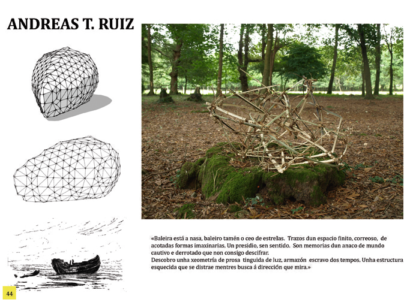
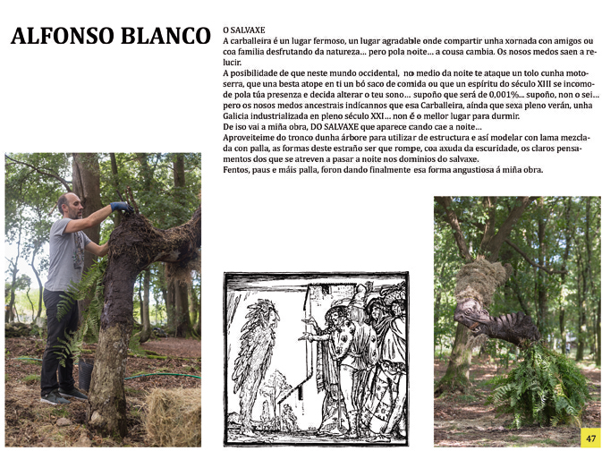

‹ › ‹ › ‹ ›  ‹ › ‹ › ‹ › ‹ › ‹ › ‹ › ‹ › ‹ › ‹ › ‹ › ‹ › ‹ › ‹ › ‹ › ‹ › ‹ › ‹ › ‹ › ‹ › ‹ › ‹ › ‹ › ‹ › ‹ › ‹ › ‹ › ‹ › ‹ › ‹ › ‹ › >"> ‹ › ‹ › ‹ › ‹ › ‹ › ‹ › ‹ › ‹ ›  ‹ ›  ‹ › ‹ › ‹ ›  ‹ › ‹ › ‹ › ‹ › ‹ › ‹ › ‹ › ‹ › ‹ › ‹ › ‹ › ‹ › Fonte: dfsfsf || sdfsfsdf ||